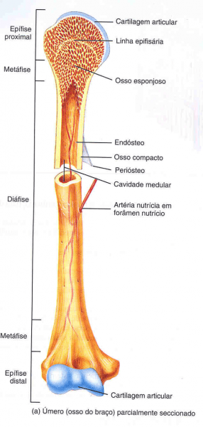
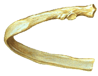
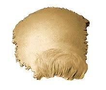
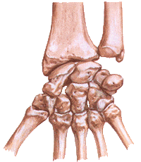
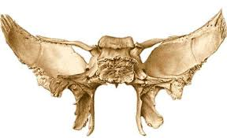
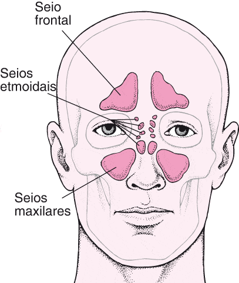
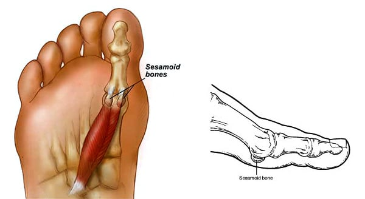
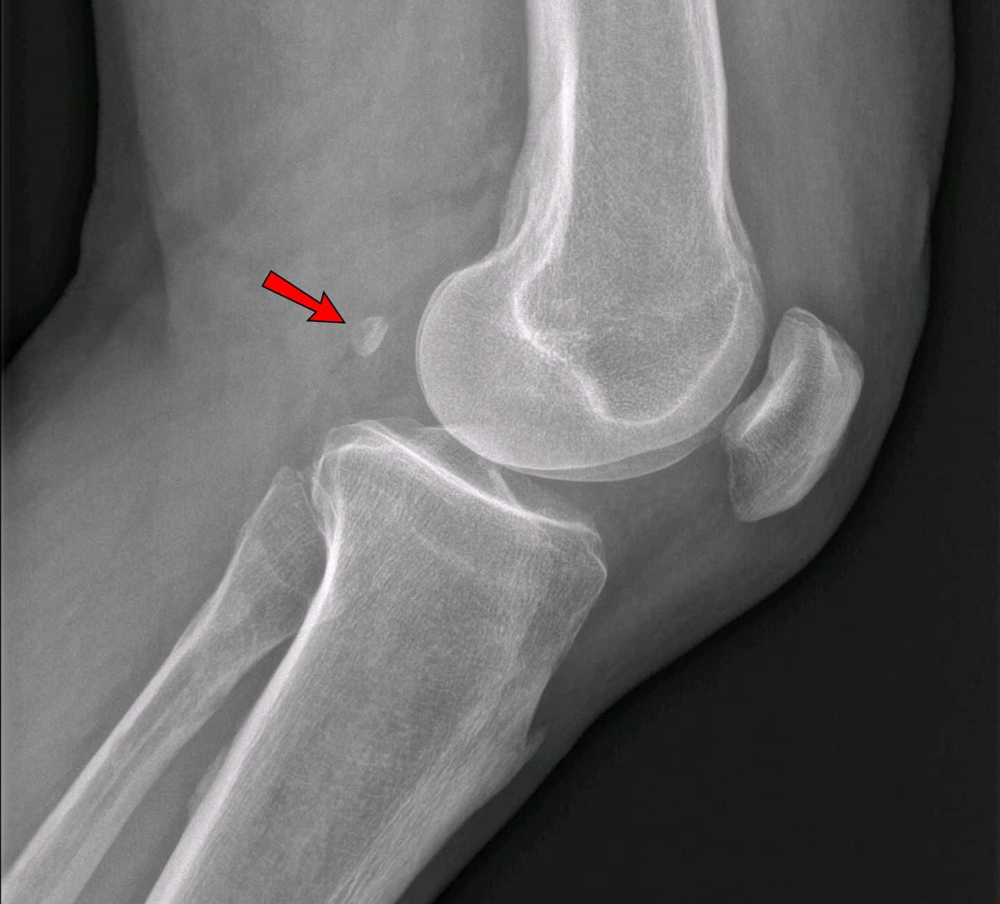
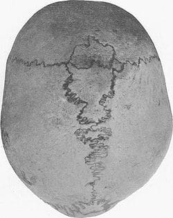

Há várias maneiras de classificar os ossos.
Eles podem, por exemplo, ser classificados pela sua posição topográfica, reconhecendo-se ossos axiais (que pertencem ao esqueleto axial) e apendiculares (que fazem parte do esqueleto apendicular).
Entretanto, a classificação mais difundida é aquela que leva em consideração a forma dos ossos, classificando-os segundo a predominância de uma das dimensões (comprimento, largura ou espessura) sobre as outras duas.
Assim, reconhecem-se:
É aquele que apresenta um comprimento consideravelmente maior que a largura e a espessura.
Exemplos típicos são os ossos do esqueleto apendicular: fêmur, úmero, rádio, ulna, tíbia, fíbula, falanges.
Observe como o osso longo apresenta duas extremidades, denominadas epífises e um corpo, a diáfise.
Por esta razão, boa parte dos ossos longos apresentam um canal central, também conhecido como canal / cavidade medular.

Também apresenta um comprimento consideravelmente maior que a largura e a espessura.
No entanto são curvados em relação aos ossos longos e não apresentam canal central.

Também chamado (impropriamente) plano, é o que apresenta comprimento e largura equivalentes, predominando sobre a espessura.
Ossos do crânio, como o parietal, frontal, occipital e outros como a escápula e o osso do quadril, são exemplos bem demonstrativos.

É aquele que apresenta equivalência das três dimensões.
Os ossos do carpo e do tarso são excelentes exemplos.

Apresenta uma morfologia complexa que não encontra correspondência em forma geométrica conhecidas.
As vértebras e o osso temporal são exemplos marcantes.

Apresenta uma ou mais cavidades, de volume variável revestidas de mucosa e contendo ar.
Estas cavidades recebem o nome de seio.
Os ossos pneumáticos estão situados no crânio: frontal, maxilar, temporal, etmóide e esfenóide.

Desenvolvem-se na substância de certos tendões ou da cápsula fibrosa que envolve certas articulações.
Os primeiros são chamados intratendínios e os segundos peri-articulares.
A patela é um exemplo típico de osso sesamóide intratendínio.

É o nome dado a um osso sesamóide situado na cabeça lateral do músculo gastrocnêmio.

Também chamados de Vormianos conhecidos como ossos intra-suturais, são ossos supranumerários que ocorem nas suturas do crânio.
São ossos irregulares e isolados que aparecem fora dos centros de ossificação do crânio e, embora pouco comuns, não são raros.
